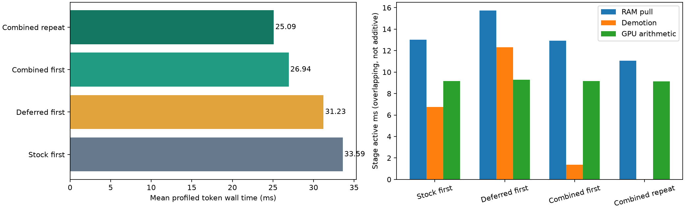
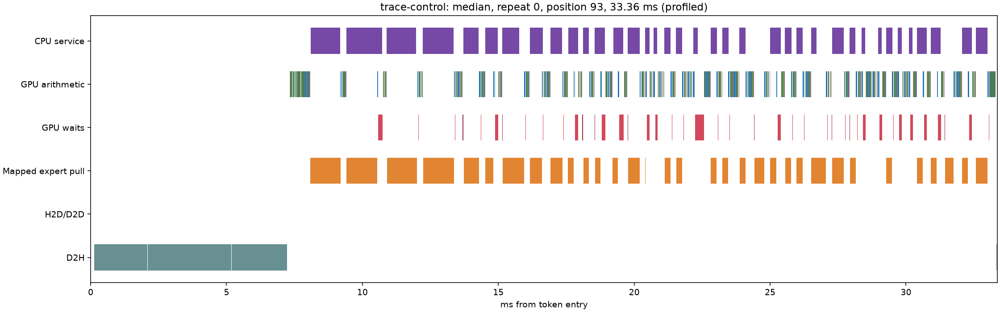
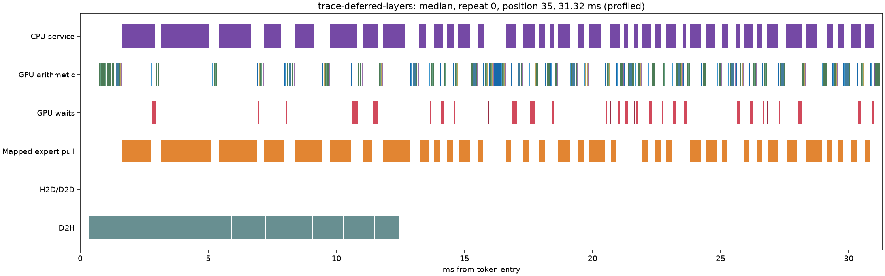
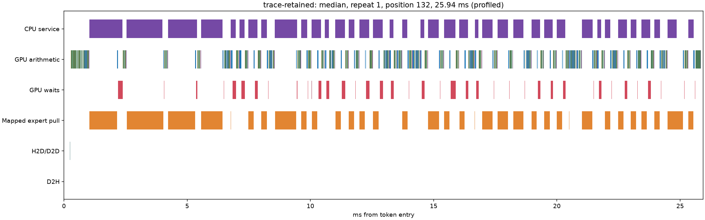

Eight distinct mechanisms were experimentally evaluated. The retained combination is bounded immutable RAM backing plus demotion submission after the embedding upload. This removes copy-back traffic instead of trying only to accelerate it. 60 TPS was not reached. No changed arithmetic kernels, token speculation, MTP, K4V, expert skipping or new quantization are in the retained implementation.
The same GSQ-RCO 3.0bit Q4-attention pack was used throughout. The routed weights contain Q2_K, Q3_K and Q4_K (GGML types 10/11/12). c=1; GPU expert pool cap 22 GiB; 2,693 GPU slots; CPU plan 011223344 unless an ablation explicitly changes it. CPU/GPU/hardware clocks were not locked; these are bounded paired screens, not confidence intervals from independent repeated sessions.
128 saved input tokens per request, two repetitions in one process. First means first scored request after tier warmup, not disk-cold. Repeat benefits from cache adaptation. Short prompt: 30 occupied tokens; long prompt: 8,192 occupied tokens from frozen source code, followed by the same continuation. Context capacity is 131,072, distinct from occupancy. Host logits download is included, output-file writing excluded. No diagnostic CUDA profiler in these timings.
| Fixture | Stock TPS | Candidate TPS | Ratio | Mean ms/token | p95 ms/token |
|---|---|---|---|---|---|
| Short, first | 30.52 | 38.19 | 1.251x | 32.77 → 26.19 | 38.68 → 30.56 |
| Short, repeat | 33.03 | 40.96 | 1.240x | 30.28 → 24.42 | 36.33 → 29.41 |
| 8K, first | 28.90 | 35.52 | 1.229x | 34.60 → 28.15 | 39.77 → 35.74 |
| 8K, repeat | 30.40 | 37.27 | 1.226x | 32.90 → 26.83 | 37.26 → 31.01 |
The 8K and diagnostic traces use the pre-cleanup candidate; the short and free-generation qualification uses the cleaned build. Binary hashes are saved per run. Cleanup removed disabled DMA/resident-gate prototypes and restored stock kernels. All 39,649,280 hybrid logits before/after cleanup are bit-identical (cleanup-parity.json). Original pre-cleanup short result: 38.90 / 42.61 TPS. The cleaned repeat is ~4% slower despite identical outputs/traffic, demonstrating run variation; do not interpret the small short-context H3-on-H1 increment as statistically established. H3 has clearer standalone and 8K evidence, so it remains in the candidate.
Greedy CSV/Python, explanation and HTML/JavaScript prompts, 128 output tokens each, two requests per task after warmup. Different outputs/routes are allowed here; fixed-input tests above control that confounder. These are short throughput workloads, not a webapp-completion quality benchmark.
| Task, pooled over two requests | Stock TPS | Candidate TPS | Ratio |
|---|---|---|---|
| csv | 28.54 | 36.43 | 1.277x |
| explanation | 30.70 | 39.20 | 1.277x |
| web | 28.48 | 36.33 | 1.276x |
| Hypothesis | First/repeat TPS | Verified mechanism | Decision |
|---|---|---|---|
| H1: RAM backing | 37.43 / 41.24 | Actual copies eliminated; mixed-format bytes and ownership checked | Retain expanded backing. +10.49 GiB pinned RAM; limited 4 GiB backing gained only ~4%. |
| H2: reuse admission | 32.73 / 34.92 | Promotion/D2H counters decrease | Do not add to retained combination; full-cpu-admission loses first-request speed. |
| H3: deferred demotions | 34.34 / 37.00 | Actual D2H/arithmetic overlap 2.33 ms/token; exact logits | Retain layers scheduling. Table-publication-only attempt was neutral. |
| H4: resident gate/up overlap | 29.74 / 31.52 | 1.04 ms/token actual fetch/arithmetic overlap; exact logits | Reject this implementation: extra arithmetic launches and GPU gaps outweigh overlap. |
| H5: DMA transport | 29.93 / 32.26 | Byte-exact microbenchmark 57–58 GB/s vs pull 45–53; integrated DMA bytes counted | Reject integrated DMA and overlap: 29.93/32.26 TPS. DMA-only first request 30.41 TPS. |
| H6: next-layer prediction | 34.51 / 36.53 | Useful predicted bytes measured; repeated useful fraction ~63.5% | Reject tested policy: excessive total H2D even with RAM backing. |
| H7: lossless compression | Feasibility only | All sampled matrices roundtrip exactly; LZ4 ratio .9712, Zstd .9332 | Reject CPU transport (3.52/1.83 GB/s decompression); GPU codec not built, small optimistic byte benefit. |
| H8: CPU assignment | 31.92 / 35.38 | Lower transfer demand, CPU execution counters engaged | Do not add to expanded backing; full-cpu 36.70/41.05 TPS is not better. |
Each experiment's manifest, counters and notes are preserved in the parent directory. Bounds, dependencies, risks and falsifiers were written before implementation in campaign plan; public/local sources and intermediate decisions are in research. Rejected screens were not all taken through long-context/prefill and Nsight qualification: those expensive metrics were reserved for promising mechanisms/complete combinations, not inferred from their flags. H7 is a measured feasibility rejection, not a claim all compression is impossible.
H1 → eliminates most D2H; H3 → overlaps remaining D2H. H2 and H8 → reduce transfer demand, but compete with gains already supplied by H1. H4 → requires independent transfer progress; H5 supplied DMA, but the complete combination still lost. H6 → relies on accurate/timely predictions and cheap transfers; H1 removes copy-back overhead but cannot remove wasted prediction uploads. H7 → needs sufficient byte savings plus fast decompression before integration is justified.
| Combination/ablation | First / repeat TPS |
|---|---|
| combo-policy | 33.15 / 36.16 |
| combo-no-shadow | 32.98 / 36.12 |
| shadow-complete | 37.43 / 41.24 |
| full-cpu | 36.70 / 41.05 |
| full-cpu-admission | 34.56 / 41.00 |
| dma-overlap | 29.93 / 32.26 |
| full-transfer | 36.74 / 40.09 |
| full-predict | 34.51 / 36.53 |
| retained-short | 38.90 / 42.61 |
Decimal MB/token; no speculative prediction in retained candidate. Demand counters measure complete fetched blobs. Trace-control is instrumented stock scheduling; its workload/slot count matches the first short fixture. Stock v2 has no byte counters, so its zero placeholders are not reported as zero traffic.
| Run / repeat | Demand H2D | D2H | Predicted H2D | Useful prediction | GPU hits/token | CPU experts/token | Disk reads/token |
|---|---|---|---|---|---|---|---|
| trace-control / 0 | 466.93 | 382.30 | 0.00 | 0.00 | 213.7 | 70.2 | 0.00 |
| deferred-layers / 1 | 403.48 | 339.77 | 0.00 | 0.00 | 228.6 | 62.5 | 0.00 |
| retained-clean / 0 | 472.86 | 50.02 | 0.00 | 0.00 | 214.6 | 70.9 | 0.00 |
| retained-clean / 1 | 413.79 | 0.71 | 0.00 | 0.00 | 228.9 | 63.6 | 0.00 |
| retained8k-corpus / 0 | 520.88 | 129.91 | 0.00 | 0.00 | 203.3 | 76.6 | 0.00 |
| retained8k-corpus / 1 | 470.92 | 106.36 | 0.00 | 0.00 | 214.9 | 70.5 | 0.00 |
| full-predict / 1 | 228.01 | 14.30 | 591.58 | 375.87 | 271.4 | 41.7 | 0.00 |
Deferred-layers retains stock placement and exact stock logits; its repeat counters provide the scheduling-only reference (403.51 MB demand + 339.78 MB demotion/token). Candidate repeat is 413.79 + 0.71 MB/token: demand is slightly higher, but total bidirectional expert traffic is about 44% lower. Copy-back drops ~99.8%. Counters describe bytes submitted during the scored window; traces separately account for copies crossing token boundaries.
Stock pinned expert RAM: 87.33 GiB; candidate: 97.82 GiB (+10.49). Same 22.00 GiB GPU expert pool. These are expert allocations, not total process/GPU usage. A 24 GiB duplicate budget is a retention limit inside the RAM tier, not an additional 24 GiB allocation. Windows pinning fallback reduced one class's allocation; not every weight has two copies. The candidate preserves headroom checks and logs actual capacity. Prefill lending releases duplicate backing when needed; this explains why repeated long prompts still cause more demotions than repeated short prompts.
| Run | Minimum physical RAM available, GiB | Minimum commit available, GiB |
|---|---|---|
| retained-clean | 13.40 | 24.50 |
| retained8k-corpus | 10.17 | 21.02 |
| trace-retained | 8.62 | 21.31 |
GPU timestamp interval unions/intersections, not CPU enqueue durations. Stage times overlap and must not be summed. D2H-minus-arithmetic-overlap still includes overlap with pulls, so it is not a causal exposed-latency estimate. The wall-time difference measures net removal/overlap including contention. Profiler RAM overhead is recorded separately; GPU slot count stays 2,693. These diagnostic timings are not the unprofiled TPS table.
| Trace | Wall | Expert fetch | D2H | Arithmetic | D2H∩arithmetic | CPU∩arithmetic | No GPU activity |
|---|---|---|---|---|---|---|---|
| trace-control | 33.591 | 13.022 | 6.766 | 9.154 | 0.000 | 0.950 | 1.942 |
| trace-deferred-layers | 31.230 | 15.724 | 12.308 | 9.299 | 2.333 | 0.961 | 1.721 |
| trace-retained / 0 | 26.942 | 12.919 | 1.365 | 9.152 | 0.447 | 0.984 | 1.873 |
| trace-retained / 1 | 25.095 | 11.052 | 0.014 | 9.137 | 0.006 | 1.103 | 1.952 |




Demotion scheduling alone makes copies last longer (bandwidth contention) but overlaps them, reducing wall time. Backing removes the work instead. Once warmed, fetch remains ~11.05 ms and GPU arithmetic ~9.14 ms; serial dependency, CPU answer waits and host gaps remain. Reaching 60 TPS requires a <=16.67 ms loop and thus another substantial change; the present results do not establish it.
| 8,192 occupied-token prompt | First prefill ms | Repeat prefill ms |
|---|---|---|
| baseline8k-corpus | 3563.05 | 3562.62 |
| shadow8k-corpus | 3551.80 | 3545.83 |
| retained8k-corpus | 3488.56 | 3479.68 |
Measured 8K prefill is preserved (about 3.56 s stock vs 3.48 s retained). This is a two-request fixture, not proof at every prompt length. An earlier 16K test used the wrong forward API and was stopped/excluded; corrected driver uses batched prefill followed by the last-token forward. Same corrected driver on the unchanged stock engine supplies the 8K baseline.
Scheduling-only H3 compares all 39,649,280 logits exactly. Original resident-overlap and completed DMA-only tests also match exactly. RAM-backing ownership is isolated using a GPU-only plan; cold loading and per-class byte checks verify immutable copies independently of CPU/GPU arithmetic placement. No numerical threshold was loosened.
| Fixed-input test | Reference | Positions | Bit exact | Max absolute delta | RMS delta | Top-1 agreement |
|---|---|---|---|---|---|---|
| deferred-layers | fixed-baseline | 256 | True | 0.00000 | 0.00000 | 100.00% |
| gpu-clean-cold | gpu-baseline | 128 | True | 0.00000 | 0.00000 | 100.00% |
| gpu-cold-shadow | gpu-baseline | 128 | True | 0.00000 | 0.00000 | 100.00% |
| gpu-shadow | gpu-baseline | 128 | True | 0.00000 | 0.00000 | 100.00% |
| retained-clean | fixed-baseline | 256 | False | 3.50764 | 0.14019 | 98.83% |
| retained8k-corpus | baseline8k-corpus | 256 | False | 3.46416 | 0.16083 | 99.61% |
Hybrid bit-exact parity is not claimed. Retaining backing changes placement and therefore CPU/GPU assignment. Stock itself changes logits across repeated cache states (max 3.877, RMS .1382; 98.44% top-1 agreement). GPU-only exact comparisons isolate memory/ownership correctness; restoring unchanged arithmetic kernels and exact H3 tests isolate scheduling. This supports retaining the engineering change, but does not turn hybrid numerical differences into a bit-exact parity pass or a broad model-quality guarantee.
| Lifecycle request | Completion |
|---|---|
| warmup | DONE 64 13 485.0 1589.0 length 0 0 0 14785 21168 |
| cancel | DONE 8 15 396.1 182.7 cancel 0 0 0 1453 2352 |
| recovery | DONE 32 16 384.1 853.8 length 0 0 0 6072 10416 |
Successful process exit checks QUIT/teardown after STOP and recovery. Every 64 diagnostic boundaries, dual-owner mappings are checked and a complete GPU/RAM expert payload is compared per live quant class. Representative short/8K repeated requests exercise eviction pressure and prefill lending; deliberately cold GPU-only execution exercises disk demand. This does not certify all multi-GPU/AMD configurations or untested speculative paths.
Branch: research/maya-transfer-campaign. Baseline: 615973d / preserved reproduction branch. All prototypes remain at research/maya-transfer-prototypes (3cf31ef). Retained cleanup checkpoint: 84c4f17. Separate unchanged-engine baseline worktree/driver: research/maya-transfer-baseline-tools (4bf9d4c). No external publication.
Opt-in candidate settings (stock behavior remains available with these MAYA settings unset):
STRATA_GLM_NO_MTP=1
STRATA_GLM_CPU_PLAN=011223344
STRATA_GLM_POOL_GB=22
STRATA_GLM_RAM_GB=101
STRATA_GLM_USAGE=0
MAYA_RAM_SHADOW_MB=24576
MAYA_RAM_SHADOW_EXPAND=1
MAYA_DEFER_DEMOTIONS=layers
The headroom-limited RAM budget is not a guarantee that every foreground workload fits simultaneously. Use the logged allocation and available-memory record. The standard daily launcher/config was not silently changed.
Reproduce via tools/run_transfer_lab.py, tools/profile_decode.py, tools/validate_retained_transfer.ps1; summarize via tools/summarize_transfer.py then tools/report_transfer_campaign.py. Evidence includes manifests, per-token CSVs, memory samples, logits locally, CUDA traces locally, exported timing tables, request outputs and failure logs. Rejected prototype flags require the prototype branch. Large logits/traces are retained locally and intentionally not committed.
Next bottleneck is demand RAM→VRAM traffic and dependent compute, not bulk warm copy-back. Revisit prediction only with materially better usefulness/demand priority; revisit overlap only with lower submission/launch cost. More RAM duplication alone has diminishing returns once demotions are almost zero.